An interactive companion to this lesson — it opens in a new tab.
Starry, Starry Night: How Don McLean’s “Vincent” Turns Van Gogh into an English Lesson in Empathy
A guided close reading of the 1971 folk classic “Vincent (Starry, Starry Night)”, based on a Gemini Notebook lesson deck — with the song’s story, key vocabulary, interactive flashcards, term tooltips, and a comprehension quiz. 🌻
In 1971, Don McLean was broke, playing to disengaged high schoolers in Stockbridge, Massachusetts for fifty dollars a night. Reading a book by Vincent van Gogh’s brother Theo, the young folk singer discovered that the painter was not the caricature of a madman he had imagined, but a man who suffered deeply for his art. Out of that discovery came one of the tenderest tributes in popular music — a quiet acoustic ballad recorded in a single take and addressed directly to a painter who could no longer hear it.
The lesson deck behind this article — assembled in a Gemini-powered notebook and framed as a lyrical meditation on genius, misunderstanding, and beauty too fragile for the world — follows the song line by line, pairing every lyric with the history behind it and with sharp analytical commentary. The deck closes with an idea that deserves to be quoted in full: a song about a misunderstood genius became the final comfort for another complex, misunderstood artist a century later. For learners of English, the material is a double gift, because it teaches the language of art, music, and emotion through a story strong enough to make every new word stay in memory. This article retells the lesson, adds vocabulary support, interactive flashcards, hover tooltips for key terms, and a quiz, and ends with the takeaway the final slide leaves behind.
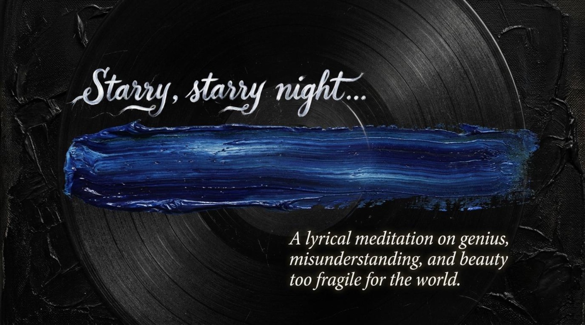
📚 From a Fifty-Dollar Gig to a Masterpiece: Content and Context
The deck opens not with music but with a failed evening on stage. The slide states the situation plainly: “In 1971, Don McLean was , playing to high schoolers in Stockbridge, Massachusetts for $50 a night. Reading a book by Vincent’s brother, Theo, McLean realized Van Gogh wasn’t garden variety crazy, but a man who suffered deeply for his art.” The word broke puts the songwriter at zero, and disengaged describes an audience that was present in the room yet absent in the mind. The turning point arrives through reading, and the idiom garden variety — literally an ordinary plant that grows in any garden — carries the sentence’s whole argument. Pay attention to the pattern worth memorizing here: English loves the structure wasn’t X, but Y for correcting an assumption, and it is one of the most useful frames a learner can own.
It is worth noting that the same logic applies to language learning: fluency grows from imperfect sentences spoken out loud, not from perfect sentences never spoken. The lesson’s backstory is, in that sense, its first piece of practical advice — begin from wherever you are, even from a fifty-dollar night in front of an indifferent audience.
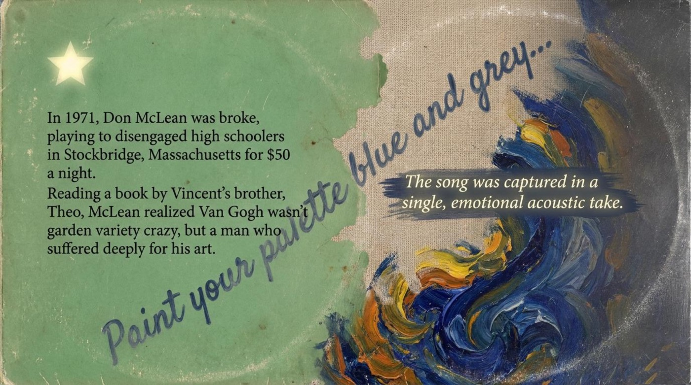
The heart of the lesson is the idea of translation between art forms. The deck pairs the lyric “Look out on a summer’s day / With eyes that know the darkness in my soul” with a technical observation: “McLean translates the post-impressionist visuals directly into acoustic folk . The song’s steady mimics the relentless, rhythmic swirling of Van Gogh’s skies, blurring the line between physical landscape and internal struggle.” The key point is that McLean did not write about the painting; he built a sound version of it, so that hearing the song feels like standing inside the canvas. The lesson calls this blurring the line between physical landscape and internal struggle, and it is the reason a folk song can carry a sky full of stars.
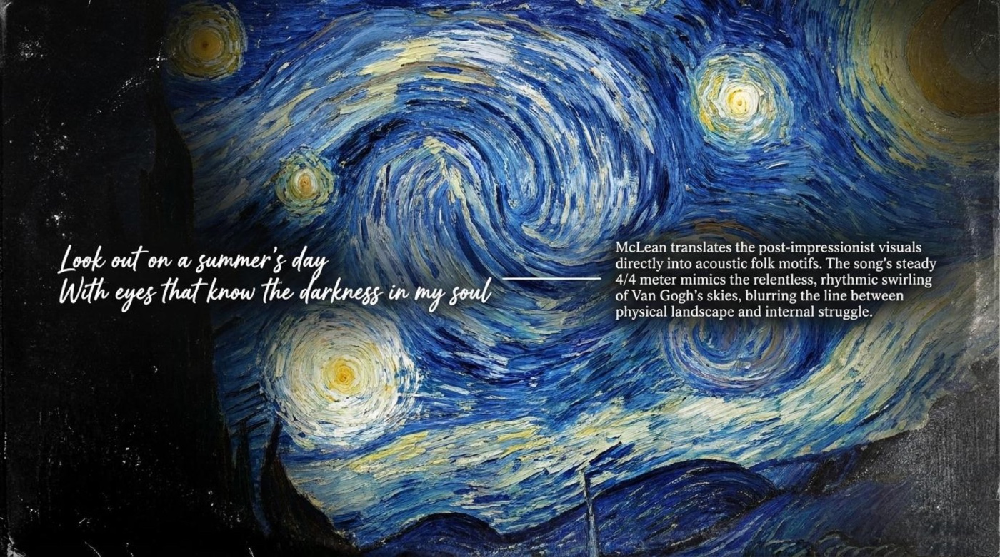
The lesson pushes this mapping further in a visual summary titled Translating Canvas to Vinyl. The slide connects “Swirling clouds in violet haze” to poetic free-form meter, “Morning fields of amber grain” to 4/4 arpeggiated guitar, and “Paint your palette blue and grey” to melancholic chord progressions, and then concludes: “The matrix demonstrates how McLean bypassed standard pop structures to create a sensory equivalent to Post-Impressionism.” An arpeggiated guitar plays the notes of a chord one after another instead of together, which produces the rolling, wave-like motion the deck compares to the painting itself. Remember that sensory equivalent is a precise term here: the song does not describe the picture, it reproduces the experience of looking at it.
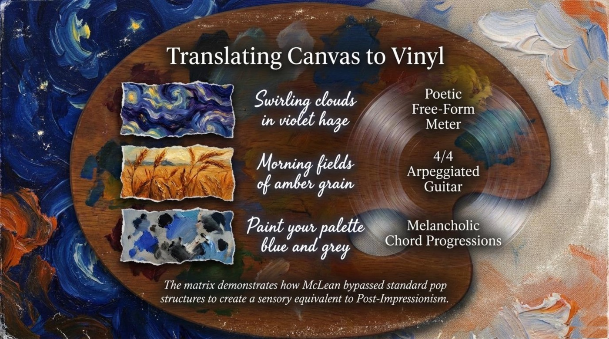
The most charming production detail in the lesson concerns the wind. The lyric “Sketch the trees and the daffodils / Catch the breeze and the winter chills” sits next to this note from the deck: “To capture the circularity of the painting’s wind, producer Ed Freeman added subtle string arrangements to McLean’s solitary guitar—designed to sound exactly like a cold wind coming in and the curtains of the studio.” The arrangement, in other words, does not decorate the song — it paints the weather inside it. A practical writing tip follows directly from this detail: precise physical verbs such as riffle, swirl, blaze, and crush let an English learner describe sound and sensation with the accuracy of a painter.
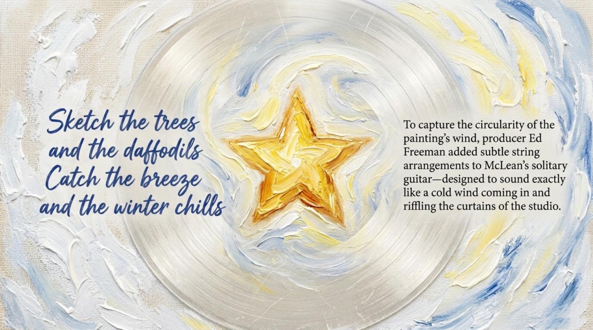
Then the lesson turns to the chorus that gives the song its grief. The lyric “They would not listen, they did not know how” is explained in three careful sentences: “The song is structured as poetry rather than a strict pop format. This chorus operates as a recurring , speaking directly to Vincent across a century of time to offer the understanding he was denied in life.” A lament is not merely a sad line — it is sorrow shaped for others to hear, and the deck’s phrase across a century of time identifies its true addressee: a painter who died in 1890, spoken to as if he were sitting in the room. Learners should notice how English handles this direct address — the second person you and the name Vincent turn a broadcast song into an intimate letter.
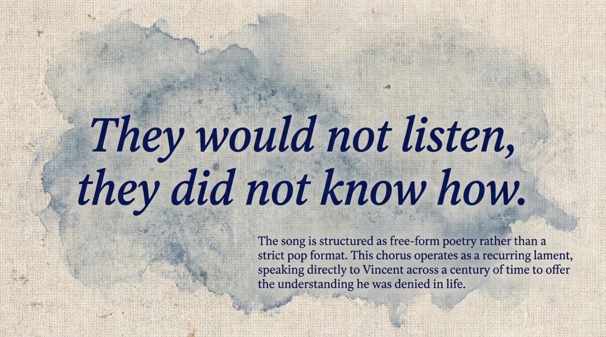
The second verse moves from the sky to the soil. The lyric “Flaming flowers that brightly blaze / Swirling clouds in violet haze” is paired with this interpretation: “The song mirrors Vincent’s own artistic evolution, shifting its lyrical focus from the lonely cosmos of Saint-Rémy down to the blazing, reality of flora and earth.” The shift is biographical as well as poetic: the swirling sky belongs to the view from Saint-Rémy, where Vincent painted at his most cosmic, while the flaming flowers belong to the garden canvases he painted with his whole body. Notice that the song’s structure itself performs the painter’s journey — the first verse looks up, the second verse looks down, and the listener travels with the artist’s eye.
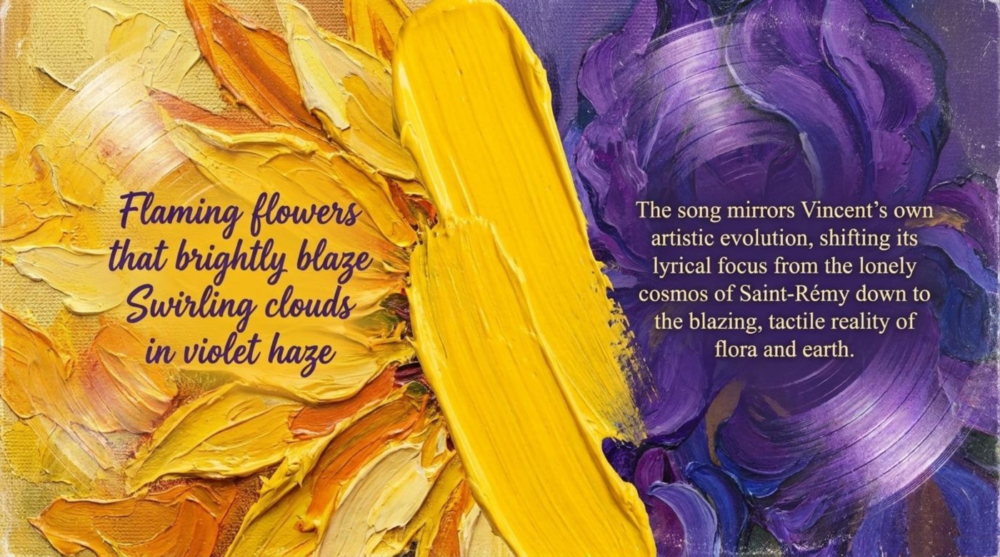
One verse of the song belongs to the people Vincent painted, and the lesson treats it as the moral center of his genius. The lyric reads “Morning fields of amber grain / Weathered faces lined in pain / Are soothed beneath the artist’s loving hand” — amber is the deep gold of ripened wheat, means worn down by hard living, and to soothe means to gently ease pain. The commentary states the point with unusual force: “McLean highlights a crucial aspect of Van Gogh’s genius—his reverence for hard labor and . The loving hand refers to Vincent’s unique ability to render human suffering with absolute dignity.” The collocation worth stealing from this slide is to render suffering with dignity — three words that carry an entire ethics of art, and a phrase that works in essays as easily as in conversation.
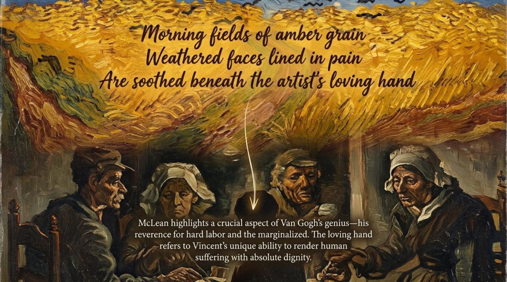
The deck does not soften the ending, and it chooses its framing with care. Beside the lyric “For they could not love you / But still your love was true / And when no hope was left in sight…” the commentary reads: “McLean frames Vincent’s eventual suicide not as an act of madness, but as the inevitable, tragic result of love for a world that met his beauty with hostility.” The verb to frame means to choose the perspective from which a story is told, and the deck’s choice reframes a biography that gossip had misfiled for decades. The tragedy is grammatically simple and emotionally devastating: Vincent loved the world, and the world did not love him back. It is a vocabulary of responsibility rather than blame, and it shows learners how the small choices of English — one adjective, one verb — decide the moral weight of a sentence.
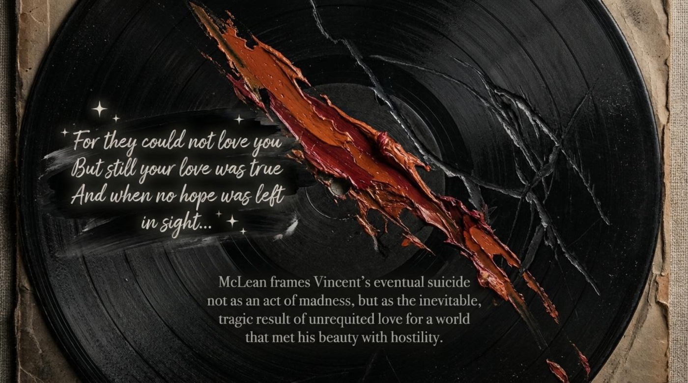
And then comes the line almost everyone knows, even people who have never heard the record. The slide quotes it alone, without commentary, over a close-up of Vincent’s blue eye: “But I could have told you, Vincent… This world was never meant for one as beautiful as you.” The grammar deserves a moment of study, because could have told you is the modal perfect of regret — a statement about a chance that existed in the past and was missed. The word one stands quietly in place of a person, which keeps the sentence elegant instead of sentimental. Pay attention to how much sadness fits inside a single verb form; this is the kind of grammar that textbooks rarely highlight and songs never forget.
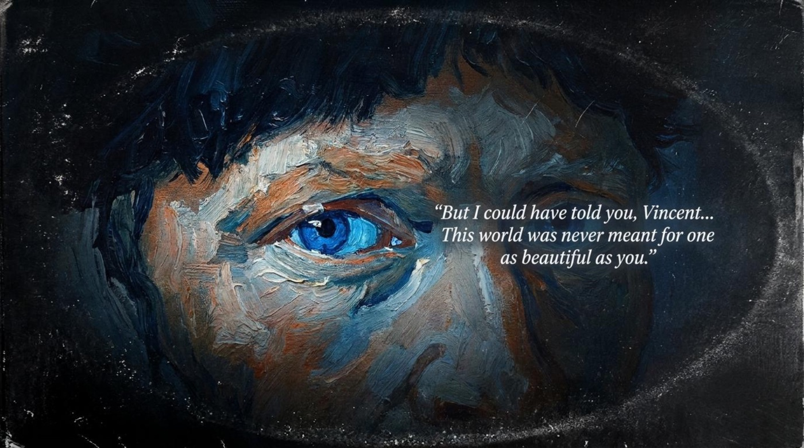
📖 Vocabulary and Language Takeaways
The deck was built as a language lesson in disguise, and its vocabulary is the disguise removed. The ten items below were chosen directly from the slides, and each is presented with its literal meaning, its contextual meaning inside the material, the example sentence where it appears, and the way the deck itself explains or deploys it. Read them in order, because together they retell the entire story of the song in miniature: a broke singer, a single take, a lament, a loving hand, an unrequited love, a post-mortem, a solace, and an elusive understanding.
📌 1. broke (adjective, informal)
- Literal meaning: having no money at all.
- Figurative / contextual meaning: the financial low point of a struggling artist’s life, the zero from which the story climbs.
- Example from the material: “In 1971, Don McLean was broke, playing to disengaged high schoolers in Stockbridge, Massachusetts for $50 a night.” The sentence places broke next to a tiny fee and an indifferent audience, so one adjective paints the whole scene of failure before the triumph.
- How the material explains it: the slide lets the word do the storytelling instead of adding any explanation — and the contrast with what the song became gives broke its full weight. The lesson here is that one well-chosen adjective can carry a biography.
📌 2. disengaged (adjective)
- Literal meaning: detached, not mentally involved.
- Figurative / contextual meaning: an audience physically present but emotionally absent.
- Example from the material: “…playing to disengaged high schoolers in Stockbridge, Massachusetts for $50 a night.” The crowd heard the music and did not connect with it.
- How the material explains it: the slide uses disengaged as the opposite of the connection the finished song would later create — the story arc runs from listeners who were disengaged to listeners who finally listen. Pay attention to the prefix dis-, which flips a word into its opposite, a productive pattern in English (connect → disconnect, honest → dishonest).
📌 3. garden variety (idiom, adjective)
- Literal meaning: an ordinary plant that grows in any common garden.
- Figurative / contextual meaning: completely ordinary, unremarkable, nothing special.
- Example from the material: “McLean realized Van Gogh wasn’t garden variety crazy, but a man who suffered deeply for his art.”
- How the material explains it: the slide uses the idiom to reject a lazy label — the structure wasn’t garden variety crazy, but… replaces a stereotype with a dignified truth. Idioms of ordinariness become powerful precisely when you negate them.
📌 4. take (noun, recording term)
- Literal meaning: one complete recorded attempt at a performance.
- Figurative / contextual meaning: a single chance to get the emotion right, with no safety net.
- Example from the material: “The song was captured in a single, emotional acoustic take.”
- How the material explains it: the deck repeats the idea in its timeline — “Don McLean (1971): Reads Theo’s book and records Vincent in a single take.” — to show that the imperfection is the point: nothing was polished, so nothing was lost. In studio English, one more take is one of the most famous phrases in music history.
📌 5. lament (noun)
- Literal meaning: an outward expression of deep grief, often musical or poetic.
- Figurative / contextual meaning: sorrow that keeps returning, like a refrain.
- Example from the material: “This chorus operates as a recurring lament, speaking directly to Vincent across a century of time to offer the understanding he was denied in life.”
- How the material explains it: the slide turns a technical label (chorus) into an emotional one (lament), teaching that in song analysis, function is feeling. Remember that a lament is not only sad — it is sad on purpose, shaped for others to hear.
📌 6. to soothe (verb)
- Literal meaning: to gently calm pain, distress, or anxiety.
- Figurative / contextual meaning: art as a healing touch that honors pain instead of erasing it.
- Example from the material: “Morning fields of amber grain / Weathered faces lined in pain / Are soothed beneath the artist’s loving hand.”
- How the material explains it: the commentary defines the loving hand as “Vincent’s unique ability to render human suffering with absolute dignity” — so to soothe means to respect suffering, not to hide it. The verb collocates naturally with pain, fears, anxiety, and a crying child.
📌 7. unrequited (adjective)
- Literal meaning: (of a feeling, especially love) not returned by the other person.
- Figurative / contextual meaning: giving everything to someone — or something — that gives nothing back.
- Example from the material: “…the inevitable, tragic result of unrequited love for a world that met his beauty with hostility.”
- How the material explains it: the slide reframes the whole biography in one adjective: Vincent loved the world, and the world answered with hostility. Notice the partnership of the two words — unrequited love plus hostility — from which the deck builds its entire tragedy.
📌 8. post-mortem (noun, from Latin)
- Literal meaning: Latin for after death; a medical examination to establish the cause of death.
- Figurative / contextual meaning: any review or reflection that happens after an event has ended; in office English, the meeting held after a project finishes.
- Example from the material: “The song shifts to a haunting post-mortem. The lyrics reflect on how Vincent’s self-portraits now stare out at a world that finally watches them, forever frozen in the agony and isolation he felt while painting them.”
- How the material explains it: the slide treats the second half of the song as an examination of a life that is already over — the portraits look back at us. A clinical word placed inside a love song lands heavily, and that friction is exactly why the deck chose it.
📌 9. solace (noun)
- Literal meaning: comfort or relief given to someone in deep distress.
- Figurative / contextual meaning: a handrail in the dark; the comfort a person reaches for when nothing else helps.
- Example from the material: “Names it his favorite song, playing it in his hospital room as he finds ultimate solace in the lyrics.”
- How the material explains it: the slide attaches solace to Tupac Shakur’s final days, making the word the proof of the deck’s central claim that empathy travels. Notice the fixed pattern: solace is nearly always used with find or take — he finds ultimate solace in the lyrics.
📌 10. elusive (adjective)
- Literal meaning: hard to find, catch, remember, or achieve.
- Figurative / contextual meaning: understanding that keeps slipping away the moment you reach for it.
- Example from the material: “The songwriter’s painful concession. Understanding remains elusive.”
- How the material explains it: the slide compresses the song’s final chorus into two sentences — hope (Perhaps they’ll listen now) becomes concession (Perhaps they never will). Elusive is the precise word for a goal that retreats as it is approached, and it is a favorite of exam writers and journalists for exactly that reason.
It should be noted that none of these words is decorative. Each one appears inside an argument the deck is making about art and empathy, which is exactly the condition under which new vocabulary sticks: a word learned inside a story you care about returns on its own. The ten items also form a chain — broke → take → lament → soothe → unrequited → post-mortem → solace → elusive — and being able to retell the song’s story using all ten is an excellent self-test before moving on.
🎴 Interactive Flashcards: Flip the Key Words
The eight cards below hold the core vocabulary of the lesson. Click a card — or focus it with the Tab key and press Enter or Space — to flip it over and reveal the full entry with the literal meaning, the meaning inside the song, the example from the material, and a note on why the word matters. The Flip all cards button turns the whole set over at once.
🎨 Deeper Meaning: The Metaphors Behind the Masterpiece
The slides work like a museum guide, and four of their images deserve a second, slower look. Each of the following symbols carries a piece of the song’s argument, and each is quoted here together with the deck’s own interpretation. Understanding them turns a pretty ballad into a structured work of art — and it builds the exact reading skill that exams, editorials, and literature all reward.
🌻 1. “Paint your palette blue and grey” — the palette as a self-portrait
Blue and grey are the traditional colors of melancholy, and the song opens by telling the painter to cover his palette with them. The deck’s Translating Canvas to Vinyl summary completes the metaphor by mapping “Paint your palette blue and grey” onto melancholic chord progressions, which means the harmony of the song wears the same colors as the lyric. The palette, in other words, is never just equipment: it is the painter’s inner weather made visible, and McLean’s chords become its acoustic twin. The symbol teaches the first rule of reading imagery — when a poem names a color, it is describing a feeling, and when a chord progression repeats, it is painting the same feeling in sound.
🖼️ 2. “Frameless heads on nameless walls” — fame as an irony
The lyric “Portraits hung in empty halls / Frameless heads on nameless walls” arrives with the deck’s starkest commentary: “The song shifts to a haunting . The lyrics reflect on how Vincent’s self-portraits now stare out at a world that finally watches them, forever frozen in the agony and isolation he felt while painting them.” The significance lies in the reversal of the gaze: the man nobody looked at now looks at everyone, and the word finally is the wound inside the compliment. A frameless head on a nameless wall is also a precise image of neglect — the art survived while the person and his context were stripped away. The metaphor deepens the song’s central question about recognition: the world that finally watches is not the world he needed.
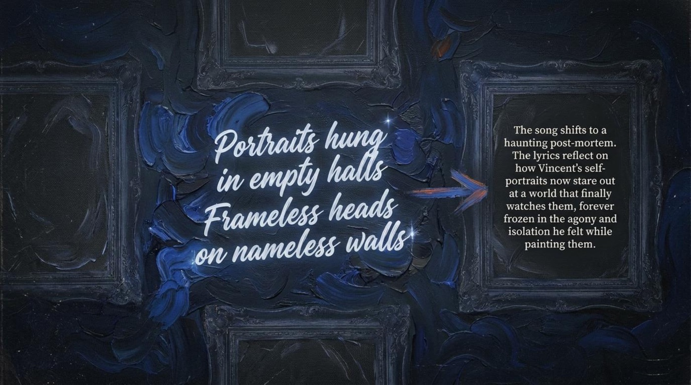
🥀 3. “The silver thorn, a bloody rose… the virgin snow” — beauty crushed
The line “The ragged men in ragged clothes / The silver thorn, a bloody rose / Lie crushed and broken on the virgin snow” compresses three symbols into two sentences, and the deck interprets the whole cluster at once: “The ultimate realization that the world breaks the very people who try to heal it.” The thorn inside the silver flower stands for the pain hidden inside beauty, the bleeding rose stands for love that wounds the one who gives it, and the untouched snow stands for the world’s blank, self-preserving purity that receives everything broken. The doubled adjective ragged — repeated exactly — doubles the texture of poverty and ties this verse back to the weathered faces the loving hand once soothed. It is the emotional hinge of the entire song: the healers are the ones who break.
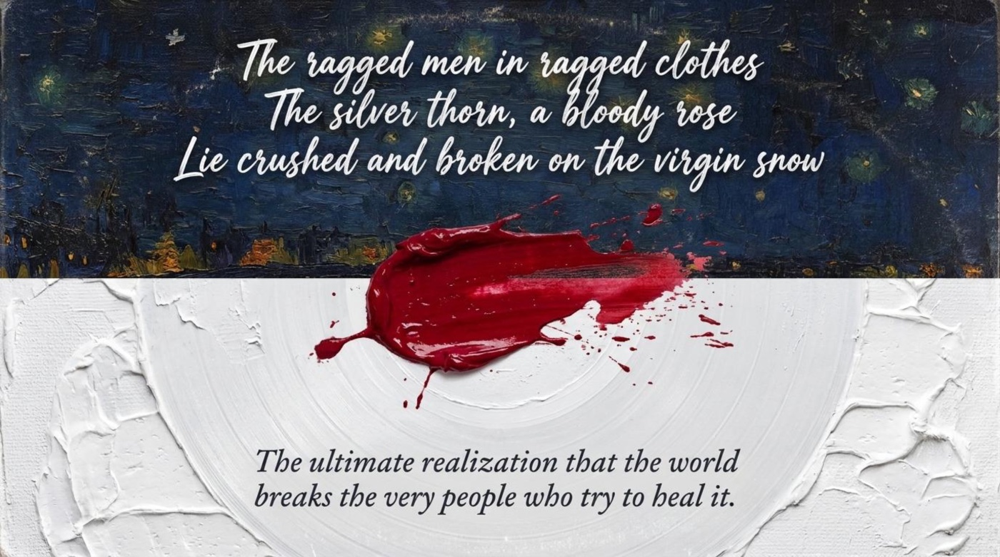
🔁 4. The chorus that changes its mind — and the chain of empathy
The deck tracks a quiet devastation inside the song’s structure: the early choruses sing “They would not listen, they did not know how. Perhaps they’ll listen now.”, while the final chorus sings “They would not listen, they’re not listening still. Perhaps they never will.” The commentary names the change precisely: “The songwriter’s painful concession. Understanding remains elusive.” Hope decays into concession across three verses, and the listener hears the songwriter give up in real time. Yet the deck refuses to end there, because the next slide answers the concession with history: “Vincent (1889): Paints for the misunderstood.”, “Theo Van Gogh: Preserves the pain in his writings.”, “Don McLean (1971): Reads Theo’s book and records Vincent in a single take.”, and “Tupac Shakur (1996): Names it his favorite song, playing it in his hospital room as he finds ultimate solace in the lyrics.” The summary sentence binds the chain together: “The chain of empathy: A song about a misunderstood genius became the final comfort for another complex, misunderstood artist a century later.” The concession, in other words, was wrong in the most beautiful way possible — understanding did arrive, carried link by link by people who refused to stop listening.
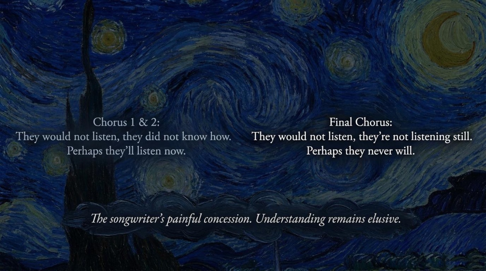
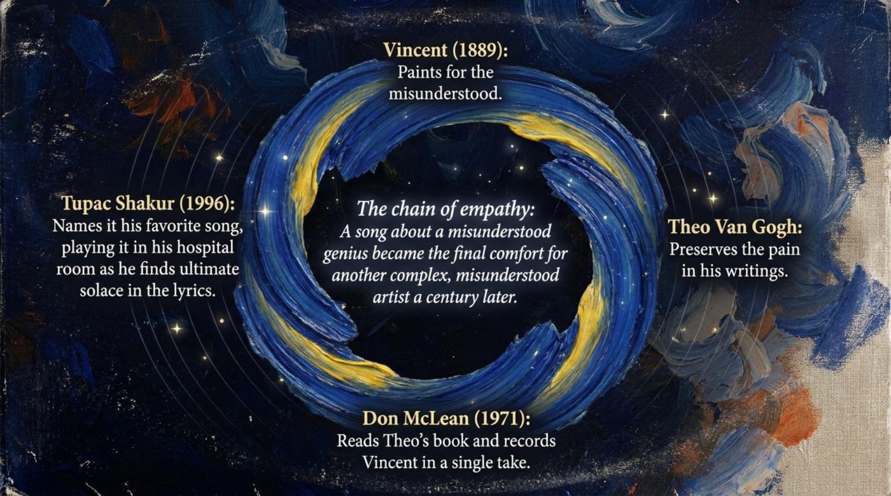
🧠 Comprehension Check: An Interactive Quiz
The quiz below collects the eight facts and phrases a careful reader of this lesson should recognize instantly. Choose an answer and the page responds at once: the correct option turns green with a small round of applause, a wrong option turns red with a buzz and a shake, and a short explanation appears under the question. The score counter and the row of progress dots keep track of the journey, and a final panel delivers the verdict with an invitation to run the whole quiz again.
🌟 Conclusion: The Takeaway of the Final Slide
The last slide of the deck contains no commentary at all — only the words “…perhaps they never will.” set over a wheat field alive with black crows, the landscape Vincent painted in his final weeks. The quietness of that ending is the point: understanding is never guaranteed, not by talent, not by time, and not even by a beautiful song. Yet the deck has already answered its own despair one slide earlier, in a sentence that deserves to stand as the takeaway of the whole lesson: “The chain of empathy: A song about a misunderstood genius became the final comfort for another complex, misunderstood artist a century later.” Theo preserved the pain, McLean read it and sang it, Tupac found in it, and every listener who truly hears the song extends the chain by one more link.
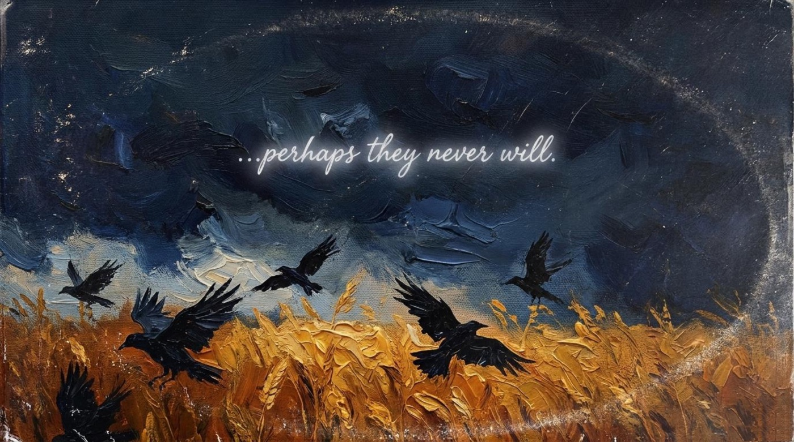
The practical takeaway for a language learner follows the same pattern. Listen to “Vincent” once with the lyrics in front of you and once without them, and let the two versions argue in memory. Retell the story of the fifty-dollar gig, the book by Theo, and the single acoustic take in your own English, out loud, in five sentences. Teach three of the ten words from this article — lament, unrequited, and solace make an excellent trio — to somebody who has never heard them. And practice the skill the whole song is about: when the world meets somebody’s beauty with hostility, listening well remains the simplest and most human form of fluency. The songwriter’s concession is a reminder, not a verdict — understanding may be , but it is never impossible for the person who keeps practicing.
📎 Lesson Files
The complete original lesson deck accompanies this article. It opens in a new tab: